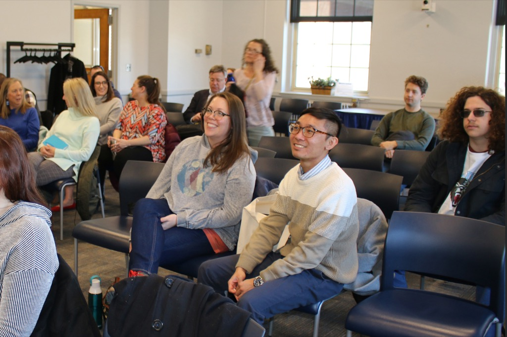

As the sudden rise of generative AI sends shock waves through society, no sector is feeling the
disruption as abruptly and pervasively as education. Large Language Models like ChatGPT threaten to
make the term paper obsolete, while diffusion-based text-to-image generators like DALLE-2, Stable
Diffusion, and Midjourney offer a way to create images that's completely outside
the workflow of most illustrators and designers, whether trained in analog or digital media.
Rather than try to ban this technology from classrooms outright, the Learning With AI initiative from
the University of Maine asks if this moment offers an opportunity to introduce students to the
ethical and economic questions wreaked by these new tools, as well as to experiment with progressive
forms of pedagogy that can exploit them.
The resources below include articles, videos, and other background for generative AI in education, sourced
from this
Google Sheet.
If you'd like to suggest additional resources to feature here, please
contact us via ude.eniam@otiloppij.
For a better browsing experience, please visit this site on a non-mobile
browser.
Use the search box or choose tags below to filter the results:
Search:
No matching content for that tag combination
Hover to learn more or click to visit an outside link:
The strategies below suggest techniques for discouraging or adapting generative AI to the classroom, sourced
from this
Google Sheet.
If you'd like to suggest additional strategies to feature here, please contact us via
ude.eniam@otiloppij.
For a better browsing experience, please visit this site on a non-mobile
browser.
Use the search box or choose tags below to filter the results:
Search:
No matching content for that tag combination
Hover to learn more or click to see an associated resource:
Events

Learning With AI
is organized by the
New Media program
and
Center for Innovation and Teaching and Learning, who
have invited outside experts in a series of events meant to survey the challenges and offer resources to any
educator or student wondering how to accommodate this disruption.
The organizers host free public and private events to raise awareness of generative AI's impact on education
and brainstorm solutions to its challenges. Recordings include an interactive menu that lets viewers skip to
the parts that interest them. (All times are EDT).
When you type a question or request into a text generator like ChatGPT, the bot will type back an answer
based on the data it has been trained on. This is typically information available on websites such as
Wikipedia and news outlets. Media generators like Midjourney will attempt to show you an image they have
constructed from existing images with similar caption descriptions.
Notable text generators include ChatGPT and Google's Bard. Notable image generators include DALLE-2,
Stable Diffusion, and Midjourney.
How does generative AI work?
Generative AI is a more versatile version of the predictive text you see when typing a message on your
phone, which suggests words you are likely to type next.
Generative AI is like a disembodied, clueless brain. Researchers feed this "neural network" information
from the Internet and then ask it questions. When the network guesses better answers to these questions,
researchers reinforce the connections that led to those answers. With enough training by researchers,
the system can improve its accuracy.
Every piece of information fed to generative AI--like the words "rain," "umbrella", and
"dinosaur"--occupies a different point in an abstract mathematical space. Researchers train the system
to recognize correlations among these points in existing web pages like Wikipedia. That enables the AI
to measure semantic distances between points; for example, the words "umbrella" and "rain"
would be closer in this space than "umbrella" and "dinosaur." When prompted by the user with a string of
words, the system finds the corresponding points in space and gives back a text or image that
essentially represents the average of all those points.
Each point in the space described above is a multidimensional vector. In the case of large language
models like ChatGPT, the number of variables in each vector can be in the millions. These variables can
be combined in various ways to calculate the "average" of any set of existing points. This average may
not have been a point in the original dataset, which is why image generators
like Midjourney can create simulated photographs that have never existed before based on photographs it
has already categorized.
Using this toolkit
No, we created it to share information and tactics with anyone interested in how generative AI may
transform education. That said, we encourage you to cite LearnWithAI.org if you've found the
site helpful.
We make no claims about the validity of content on third-party sites, however.
Yes! We'd love to hear your suggestions--just contact us via the link below.
More information
Learning With AI was convened by UMaine's New
Media major and Center for Innovation in
Teaching and Learning. Other partners in the initiative include the College of Education and
Human Development, Department of Electrical and Computer Engineering, Digital and Spatial History Lab,
and UMaine AI. Learn
more in the official press
release.
This program is not for you; we're focused on how to cope with generative AI when learning any
subject. Fortunately, the UMaine AI cluster offers
degrees and certificates in Computer Science, Data Science, and related fields.
No.
Let us know via the link below.
Contact us
Have a question or resources to contribute? Email us at
ude.eniam@otiloppij.